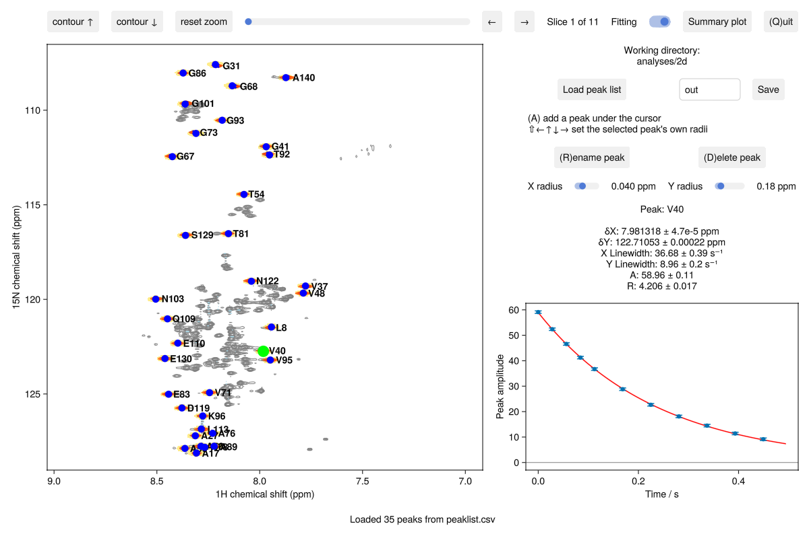

The 2D analysis window
Every 2D routine opens the same window. You pick the peaks, each peak is fitted as a 2D lineshape in every plane, and the experiment's model is fitted to the amplitudes. This is relaxation2d on a ¹⁵N R₂ series:
using NMRAnalysis
relaxation2d(example("relaxation2d_asyn"); cycletime=0.02809)
The spectrum is on the left, with the fitted lineshapes in red over the selected plane. The fitted values of the selected peak are on the right, with its model fit below.
Controls
| To | Do this |
|---|---|
| Add a peak under the cursor | A |
| Move a peak | Drag it |
| Rename the selected peak | R |
| Delete the selected peak | D |
| Step through the planes | ← → |
| Raise or lower the contours | ↑ ↓ |
| Widen or narrow the selected peak's fitting radius | Shift + arrow keys |
| Return the peak to the default radius | = |
| Continue fits that stopped early | C, or Shift + C to run until they converge |
| Cancel a fit | Esc |
| Close the window | Q |
Experiments in which peaks move, such as titrations, have more ways to add a peak: see Peak tracking.
The buttons do the same, and more: Summary plot plots the results against residue number, Fitting turns fitting off, Save writes the results to the folder named beside it, and Load peak list restores the peaks saved there.
The X and Y radius sliders set how much of the spectrum around each peak is fitted. Use smaller radii in crowded spectra, and larger ones for broad peaks.
Peak markers are blue when fitted, red while waiting to be fitted, orange where the fit didn't converge, and green when selected. The status line at the bottom says what the window is doing, and lists any peaks that need attention.
Fitting
Peaks whose fitting regions overlap are fitted together. Each peak has a position and a linewidth in each dimension, shared across the planes, and an amplitude in each plane. Start Julia with julia -t auto to fit clusters in parallel.
A fit stops after 30 seconds, leaving the peak orange. Press C to continue it. A peak whose position or linewidth ends at its limit is also orange: move it, or widen its radius.
The uncertainty of each amplitude comes from the residuals of the fit. Errors in the lineshape scale every amplitude of a peak equally, so they cancel in a rate or a ratio, and are not included.
Common keywords
| Keyword | Meaning |
|---|---|
peaklist | Peaks to start from: a saved peaklist.csv or the folder holding it, a Sparky list, or a label x y text file |
skipplanes | Planes to leave out of the fit. They're still shown |
prompt | false to raise an error, rather than ask, for anything that can't be found |
Output
Save writes:
| File | Contents |
|---|---|
summary.txt | The data, the fitting radii and the main result for each peak |
results.csv | One row per peak: the fitted parameters, with uncertainties |
series.csv | One row per peak per plane: amplitude, position and linewidths |
global.csv | Parameters shared by all peaks, such as a titration's Kd |
peaklist.csv | The peaks you picked |
analysis.toml | The call, for reopen |
summary.pdf | The main result against residue number |
peaks/, cluster_*.pdf | Each peak's fit, and each cluster's lineshapes |
A folder that already exists is first renamed <name>_previous. See Peak lists and output files for the formats.
Reopen an analysis
reopen("out")opens a saved analysis with the same data, parameters and peaks.
Scripting
Each routine also returns the analysis when the window closes. results(expt) gives the contents of results.csv, one row per peak, and planeresults(expt) those of series.csv. summaryplot plots a parameter against residue number.